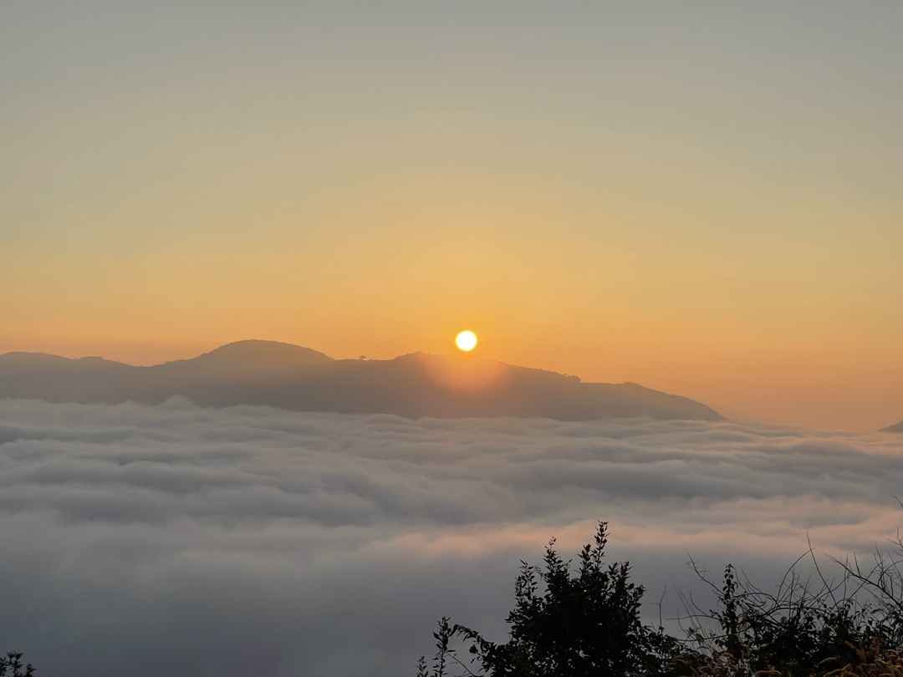
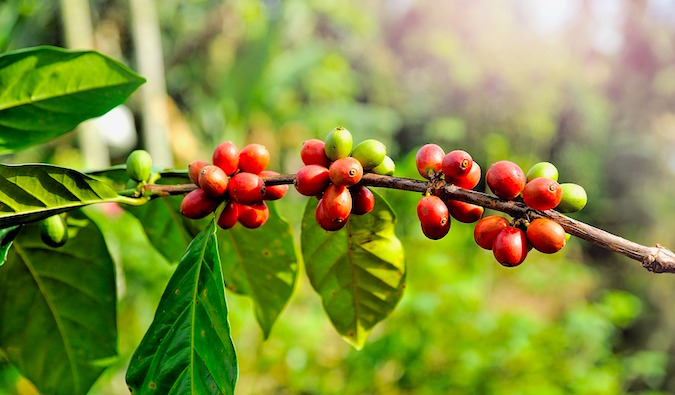

Here comes the second day of the trip-> We all were supposed to be wakeup at 4:00 in the morning to witness the most beautiful sunrise.Out of Excitement,nobody slept the previous night and were awake, and we all started at the hotel around 4:30 and reached the peak point by 5:30.The journey was wonderful with full of trees and various species of birds were found. As we went in the season, gardens were full of different flowers.The scenarios were so beautiful.
Z-POINT
"FRESH COFFEE" -
"FRESH MIND"
This sunrise picture was taken exactly at 5:45 am
 "Coffee Plantations" are one of the best things witnessed in my trip.While talking about Coorg, coffee deserves the first mention. Besides visiting a coffee plantation, we could first hand see the various stages that coffee seeds go through before getting into our cuppa. Carpets of coffee seeds laid to sun dry outside the houses is a common sight in Coorg.It was quite pleasant to watch the view and i also bought some pure coffee beans for me and family.
One of the biggest manufacturers of coffee in India, this beautiful hill station is covered in green acres of coffee plantations. It is a sight both serene and invigorating. Coffee plantations are one of the most popular tourist spots in Coorg. There are several ways of enjoying the sight.